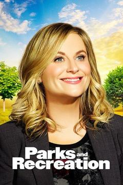

One of the main reasons I decided to pursue design is because of the impact that good design had on me. During a period when I was re-thinking, toiling over and feeling like I was failing at my next career step, I established daily disciplines and the most consistent of them was watching the tv show Parks and Rec.

This daily dose not only brought a sense of much needed levity but, in a season where I felt isolated in my search for the right steps to take, ‘Parks and Rec’ gave me a sense of belonging and the knowledge that I wasn't alone in this journey.
Here is one example.
In season 6, Leslie Knope, the show's hard working government worker protagonist, loses her recall election for Pawnee City Council and her disappointment is real. She falls into a spiral - losing interest, getting drunk and wearing uggs.
But her best friend Ann makes Leslie read a letter she had self-penned to herself prior to the election and reminds Leslie of all the good things she can still get done in her final 30 days.
In her concession speech, Leslie concedes that she has lost, but despite having been kicked out by the citizens of Pawnee, she informs them that she will continue to serve and work hard during her final days in office.
We’ve all been dealt blows in life where we feel confused and isolated. Seeing Leslie go through it on the show didn’t change my circumstances but it did make me feel less alone in my journey. It also reminded me to push through and keep a killer mentality (re: mamba).
Eventually I was fortunate enough to land in product development at an entertainment company which combined two of my joys, product and storytelling.
Watching Parks and Rec also led me to take screenwriting classes outside of work where I learned how to build and organize content. Seeing all the detailed work that went into writing an episode of a tv show reminded me that good design is transparent. When content is organized and presented clearly, people can focus on the message. Just as I was the beneficiary of good design, my goal is to work on designs that gives other people a sense of belonging.